Sensoli is a free productivity management application based on the time spent on your computer. The core of its operation relies on detecting the applications currently in use. This detection makes it possible to create the data required for the application to operate and to produce the corresponding user statistics.
To do so, Sensoli uses an official Apple module that allows it to receive application-change notifications without receiving any additional third-party information.
The main purpose of Sensoli is to provide a tool that allows different users to classify their applications into three categories: productive, neutral, or distracting, while leaving each user free to decide how applications should be classified and allowing this arbitrary classification to be modified at any time.
Sensoli is built around three main modules: analysis, recommendations, and tracking.
The analysis is based on the user's activity at the application level, not on the content of those applications.
Recommendations are based on the analyses performed and help the user understand what happened during their sessions by suggesting actions and highlighting certain aspects that would be difficult to measure without a dedicated tool.
The tracking module allows users to organize their work at the project level. Each user can provide various types of information about their projects and add tasks to them, allowing them to track their work directly within the application.